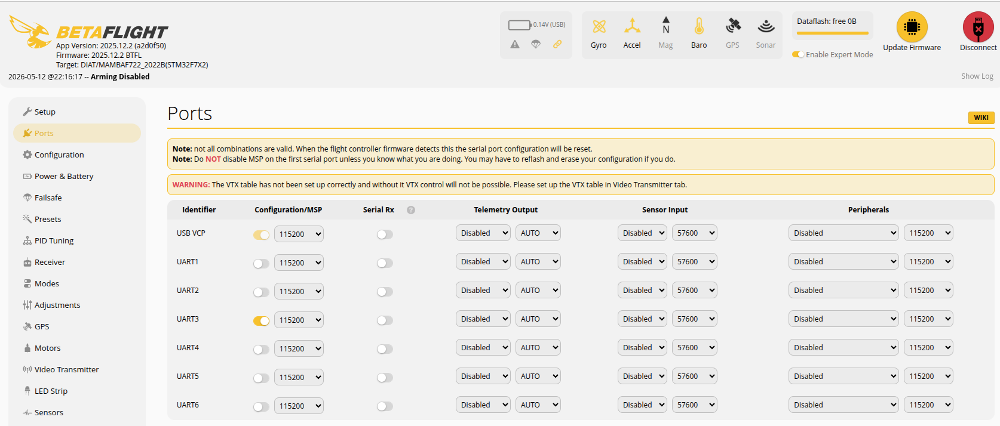

Betaflight MSP protocol
MSP protocol overview
MSP (MultiWii Serial Protocol) is the serial request/response protocol used by Betaflight Configurator and external tools to read telemetry, inspect settings, and send configuration commands to the flight controller.
MSP v1 is the original frame format. It is simple and compact, but command IDs are limited to one byte and the payload length is limited to 255 bytes. MSP v2 extends the frame with 16-bit command IDs, larger payload support, flags, and a stronger checksum. Betaflight still supports MSP v1 for compatibility, while newer or larger commands can use MSP v2 framing.
The full list of Betaflight MSP command IDs is maintained in the Betaflight source tree:
As of the current Betaflight master branch, msp_protocol.h defines 167
MSP_* IDs. Of those, 164 are usable command/response IDs; two are reserved
IDs and MSP_V2_FRAME is the MSPv2 frame marker rather than a normal command.
MSP command IDs
| ID | Command | Usage | Description |
|---|---|---|---|
1 |
MSP_API_VERSION |
Read | Get API version |
2 |
MSP_FC_VARIANT |
Read | Get flight controller variant |
3 |
MSP_FC_VERSION |
Read | Get flight controller version |
4 |
MSP_BOARD_INFO |
Read | Get board information |
5 |
MSP_BUILD_INFO |
Read | Get build information |
10 |
MSP_NAME |
Read | Returns user set board name - betaflight |
11 |
MSP_SET_NAME |
Write/action | Sets board name - betaflight |
32 |
MSP_BATTERY_CONFIG |
Read | Get battery configuration |
33 |
MSP_SET_BATTERY_CONFIG |
Write/action | Set battery configuration |
34 |
MSP_MODE_RANGES |
Read | Returns all mode ranges |
35 |
MSP_SET_MODE_RANGE |
Write/action | Sets a single mode range |
36 |
MSP_FEATURE_CONFIG |
Read | Get feature configuration |
37 |
MSP_SET_FEATURE_CONFIG |
Write/action | Set feature configuration |
38 |
MSP_BOARD_ALIGNMENT_CONFIG |
Read | Get board alignment configuration |
39 |
MSP_SET_BOARD_ALIGNMENT_CONFIG |
Write/action | Set board alignment configuration |
40 |
MSP_CURRENT_METER_CONFIG |
Read | Get current meter configuration |
41 |
MSP_SET_CURRENT_METER_CONFIG |
Write/action | Set current meter configuration |
42 |
MSP_MIXER_CONFIG |
Read | Get mixer configuration |
43 |
MSP_SET_MIXER_CONFIG |
Write/action | Set mixer configuration |
44 |
MSP_RX_CONFIG |
Read | Get RX configuration |
45 |
MSP_SET_RX_CONFIG |
Write/action | Set RX configuration |
46 |
MSP_LED_COLORS |
Read | Get LED colors |
47 |
MSP_SET_LED_COLORS |
Write/action | Set LED colors |
48 |
MSP_LED_STRIP_CONFIG |
Read | Get LED strip configuration |
49 |
MSP_SET_LED_STRIP_CONFIG |
Write/action | Set LED strip configuration |
50 |
MSP_RSSI_CONFIG |
Read | Get RSSI configuration |
51 |
MSP_SET_RSSI_CONFIG |
Write/action | Set RSSI configuration |
52 |
MSP_ADJUSTMENT_RANGES |
Read | Get adjustment ranges |
53 |
MSP_SET_ADJUSTMENT_RANGE |
Write/action | Set adjustment range |
54 |
MSP_CF_SERIAL_CONFIG |
Read | Get Cleanflight serial configuration |
55 |
MSP_SET_CF_SERIAL_CONFIG |
Write/action | Set Cleanflight serial configuration |
56 |
MSP_VOLTAGE_METER_CONFIG |
Read | Get voltage meter configuration |
57 |
MSP_SET_VOLTAGE_METER_CONFIG |
Write/action | Set voltage meter configuration |
58 |
MSP_SONAR_ALTITUDE |
Read | Get sonar altitude [cm] |
59 |
MSP_PID_CONTROLLER |
Read | Get PID controller |
60 |
MSP_SET_PID_CONTROLLER |
Write/action | Set PID controller |
61 |
MSP_ARMING_CONFIG |
Read | Get arming configuration |
62 |
MSP_SET_ARMING_CONFIG |
Write/action | Set arming configuration |
64 |
MSP_RX_MAP |
Read | Get RX map (also returns number of channels total) |
65 |
MSP_SET_RX_MAP |
Write/action | Set RX map, numchannels to set comes from MSP_RX_MAP |
68 |
MSP_REBOOT |
Write/action | Reboot settings |
70 |
MSP_DATAFLASH_SUMMARY |
Read | Get description of dataflash chip |
71 |
MSP_DATAFLASH_READ |
Read | Get content of dataflash chip |
72 |
MSP_DATAFLASH_ERASE |
Write/action | Erase dataflash chip |
75 |
MSP_FAILSAFE_CONFIG |
Read | Get failsafe settings |
76 |
MSP_SET_FAILSAFE_CONFIG |
Write/action | Set failsafe settings |
77 |
MSP_RXFAIL_CONFIG |
Read | Get RX failsafe settings |
78 |
MSP_SET_RXFAIL_CONFIG |
Write/action | Set RX failsafe settings |
79 |
MSP_SDCARD_SUMMARY |
Read | Get SD card state |
80 |
MSP_BLACKBOX_CONFIG |
Read | Get blackbox settings |
81 |
MSP_SET_BLACKBOX_CONFIG |
Write/action | Set blackbox settings |
82 |
MSP_TRANSPONDER_CONFIG |
Read | Get transponder settings |
83 |
MSP_SET_TRANSPONDER_CONFIG |
Write/action | Set transponder settings |
84 |
MSP_OSD_CONFIG |
Read | Get OSD settings |
85 |
MSP_SET_OSD_CONFIG |
Write/action | Set OSD settings |
86 |
MSP_OSD_CHAR_READ |
Read | Get OSD characters |
87 |
MSP_OSD_CHAR_WRITE |
Write/action | Set OSD characters |
88 |
MSP_VTX_CONFIG |
Read | Get VTX settings |
89 |
MSP_SET_VTX_CONFIG |
Write/action | Set VTX settings |
90 |
MSP_ADVANCED_CONFIG |
Read | Get advanced configuration |
91 |
MSP_SET_ADVANCED_CONFIG |
Write/action | Set advanced configuration |
92 |
MSP_FILTER_CONFIG |
Read | Get filter configuration |
93 |
MSP_SET_FILTER_CONFIG |
Write/action | Set filter configuration |
94 |
MSP_PID_ADVANCED |
Read | Get advanced PID settings |
95 |
MSP_SET_PID_ADVANCED |
Write/action | Set advanced PID settings |
96 |
MSP_SENSOR_CONFIG |
Read | Get sensor configuration |
97 |
MSP_SET_SENSOR_CONFIG |
Write/action | Set sensor configuration |
98 |
MSP_CAMERA_CONTROL |
Read/write | Camera control |
99 |
MSP_SET_ARMING_DISABLED |
Write/action | Enable/disable arming |
101 |
MSP_STATUS |
Read | Cycletime & errors_count & sensor present & box activation & current setting number |
102 |
MSP_RAW_IMU |
Read | 9 DOF |
103 |
MSP_SERVO |
Read | Servos |
104 |
MSP_MOTOR |
Read | Motors |
105 |
MSP_RC |
Read | RC channels and more |
106 |
MSP_RAW_GPS |
Read | Fix, numsat, lat, lon, alt, speed, ground course |
107 |
MSP_COMP_GPS |
Read | Distance home, direction home |
108 |
MSP_ATTITUDE |
Read | 2 angles 1 heading |
109 |
MSP_ALTITUDE |
Read | Altitude, variometer |
110 |
MSP_ANALOG |
Read | Vbat, powermetersum, rssi if available on RX |
111 |
MSP_RC_TUNING |
Read | RC rate, rc expo, rollpitch rate, yaw rate, dyn throttle PID |
112 |
MSP_PID |
Read | P I D coeff (9 are used currently) |
116 |
MSP_BOXNAMES |
Read | The aux switch names |
117 |
MSP_PIDNAMES |
Read | The PID names |
118 |
MSP_WP |
Read | Get a WP, WP# is in the payload, returns (WP#, lat, lon, alt, flags) WP#0-home, WP#16-poshold |
119 |
MSP_BOXIDS |
Read | Get the permanent IDs associated to BOXes |
120 |
MSP_SERVO_CONFIGURATIONS |
Read | All servo configurations |
121 |
MSP_NAV_STATUS |
Read | Returns navigation status |
122 |
MSP_NAV_CONFIG |
Read | Returns navigation parameters |
124 |
MSP_MOTOR_3D_CONFIG |
Read | Settings needed for reversible ESCs |
125 |
MSP_RC_DEADBAND |
Read | Deadbands for yaw alt pitch roll |
126 |
MSP_SENSOR_ALIGNMENT |
Read | Orientation of acc,gyro,mag |
127 |
MSP_LED_STRIP_MODECOLOR |
Read | Get LED strip mode_color settings |
128 |
MSP_VOLTAGE_METERS |
Read | Voltage (per meter) |
129 |
MSP_CURRENT_METERS |
Read | Amperage (per meter) |
130 |
MSP_BATTERY_STATE |
Read | Connected/Disconnected, Voltage, Current Used |
131 |
MSP_MOTOR_CONFIG |
Read | Motor configuration (min/max throttle, etc) |
132 |
MSP_GPS_CONFIG |
Read | GPS configuration |
133 |
MSP_COMPASS_CONFIG |
Read | Compass configuration |
134 |
MSP_ESC_SENSOR_DATA |
Read | Extra ESC data from 32-Bit ESCs (Temperature, RPM) |
135 |
MSP_GPS_RESCUE |
Read | GPS Rescue angle, returnAltitude, descentDistance, groundSpeed, sanityChecks and minSats |
136 |
MSP_GPS_RESCUE_PIDS |
Read | GPS Rescue throttleP and velocity PIDS + yaw P |
137 |
MSP_VTXTABLE_BAND |
Read | VTX table band/channel data |
138 |
MSP_VTXTABLE_POWERLEVEL |
Read | VTX table powerLevel data |
139 |
MSP_MOTOR_TELEMETRY |
Read | Per-motor telemetry data (RPM, packet stats, ESC temp, etc.) |
140 |
MSP_SIMPLIFIED_TUNING |
Read | Get simplified tuning values and enabled state |
141 |
MSP_SET_SIMPLIFIED_TUNING |
Write/action | Set simplified tuning positions and apply calculated tuning |
142 |
MSP_CALCULATE_SIMPLIFIED_PID |
Read | Calculate PID values based on sliders without saving |
143 |
MSP_CALCULATE_SIMPLIFIED_GYRO |
Read | Calculate gyro filter values based on sliders without saving |
144 |
MSP_CALCULATE_SIMPLIFIED_DTERM |
Read | Calculate D term filter values based on sliders without saving |
145 |
MSP_VALIDATE_SIMPLIFIED_TUNING |
Read | Returns array of true/false showing which simplified tuning groups match values |
150 |
MSP_STATUS_EX |
Read | Cycletime, errors_count, CPU load, sensor present etc |
160 |
MSP_UID |
Read | Unique device ID |
164 |
MSP_GPSSVINFO |
Read | Get Signal Strength (only U-Blox) |
166 |
MSP_GPSSTATISTICS |
Read | Get GPS debugging data |
167 |
MSP_ATTITUDE_QUATERNION |
Read | Orientation quaternion components (w, x, y, z) |
180 |
MSP_OSD_VIDEO_CONFIG |
Read | Get OSD video settings |
181 |
MSP_SET_OSD_VIDEO_CONFIG |
Write/action | Set OSD video settings |
182 |
MSP_DISPLAYPORT |
Read | External OSD displayport mode |
183 |
MSP_COPY_PROFILE |
Write/action | Copy settings between profiles |
184 |
MSP_BEEPER_CONFIG |
Read | Get beeper configuration |
185 |
MSP_SET_BEEPER_CONFIG |
Write/action | Set beeper configuration |
186 |
MSP_SET_TX_INFO |
Write/action | Set runtime information from TX lua scripts |
187 |
MSP_TX_INFO |
Read | Get runtime information for TX lua scripts |
188 |
MSP_SET_OSD_CANVAS |
Write/action | Set OSD canvas size COLSxROWS |
189 |
MSP_OSD_CANVAS |
Read | Get OSD canvas size COLSxROWS |
200 |
MSP_SET_RAW_RC |
Write/action | 8 rc chan |
201 |
MSP_SET_RAW_GPS |
Write/action | Fix, numsat, lat, lon, alt, speed |
202 |
MSP_SET_PID |
Write/action | P I D coeff (9 are used currently) |
204 |
MSP_SET_RC_TUNING |
Write/action | RC rate, rc expo, rollpitch rate, yaw rate, dyn throttle PID, yaw expo |
205 |
MSP_ACC_CALIBRATION |
Write/action | No param - calibrate accelerometer |
206 |
MSP_MAG_CALIBRATION |
Write/action | No param - calibrate magnetometer |
208 |
MSP_RESET_CONF |
Write/action | No param - reset settings |
209 |
MSP_SET_WP |
Write/action | Sets a given WP (WP#,lat, lon, alt, flags) |
210 |
MSP_SELECT_SETTING |
Write/action | Select setting number (0-2) |
211 |
MSP_SET_HEADING |
Write/action | Define a new heading hold direction |
212 |
MSP_SET_SERVO_CONFIGURATION |
Write/action | Servo settings |
214 |
MSP_SET_MOTOR |
Write/action | PropBalance function |
215 |
MSP_SET_NAV_CONFIG |
Write/action | Sets nav config parameters |
217 |
MSP_SET_MOTOR_3D_CONFIG |
Write/action | Settings needed for reversible ESCs |
218 |
MSP_SET_RC_DEADBAND |
Write/action | Deadbands for yaw alt pitch roll |
219 |
MSP_SET_RESET_CURR_PID |
Write/action | Reset current PID profile to defaults |
220 |
MSP_SET_SENSOR_ALIGNMENT |
Write/action | Set the orientation of acc,gyro,mag |
221 |
MSP_SET_LED_STRIP_MODECOLOR |
Write/action | Set LED strip mode_color settings |
222 |
MSP_SET_MOTOR_CONFIG |
Write/action | Motor configuration (min/max throttle, etc) |
223 |
MSP_SET_GPS_CONFIG |
Write/action | GPS configuration |
224 |
MSP_SET_COMPASS_CONFIG |
Write/action | Compass configuration |
225 |
MSP_SET_GPS_RESCUE |
Write/action | Set GPS Rescue parameters |
226 |
MSP_SET_GPS_RESCUE_PIDS |
Write/action | Set GPS Rescue PID values |
227 |
MSP_SET_VTXTABLE_BAND |
Write/action | Set vtxTable band/channel data |
228 |
MSP_SET_VTXTABLE_POWERLEVEL |
Write/action | Set vtxTable powerLevel data |
230 |
MSP_MULTIPLE_MSP |
Read | Request multiple MSPs in one request |
238 |
MSP_MODE_RANGES_EXTRA |
Read | Extra mode range data |
239 |
MSP_SET_ACC_TRIM |
Write/action | Set acc angle trim values |
240 |
MSP_ACC_TRIM |
Read | Get acc angle trim values |
241 |
MSP_SERVO_MIX_RULES |
Read | Get servo mixer configuration |
242 |
MSP_SET_SERVO_MIX_RULE |
Write/action | Set servo mixer configuration |
245 |
MSP_SET_PASSTHROUGH |
Write/action | Set passthrough to peripherals |
246 |
MSP_SET_RTC |
Write/action | Set the RTC clock |
247 |
MSP_RTC |
Read | Get the RTC clock |
248 |
MSP_SET_BOARD_INFO |
Write/action | Set the board information |
249 |
MSP_SET_SIGNATURE |
Write/action | Set the signature of the board and serial number |
250 |
MSP_EEPROM_WRITE |
Write/action | Write settings to EEPROM |
251 |
MSP_RESERVE_1 |
Reserved | reserved for system usage |
252 |
MSP_RESERVE_2 |
Reserved | reserved for system usage |
253 |
MSP_DEBUGMSG |
Read | debug string buffer |
254 |
MSP_DEBUG |
Read | debug1,debug2,debug3,debug4 |
255 |
MSP_V2_FRAME |
Frame marker | MSPv2 payload indicator |
Config betaflight uart port for msp usage

Demo: python msp
MSP_STATUS
MSP_STATUS (101) is a read-only status snapshot. Send it with an empty
payload to get the controller loop timing, bus error count, detected sensors,
active flight-mode flags, and the selected PID/profile slot. Multi-byte values
are returned little-endian.
| Offset | Size | Field | Meaning |
|---|---|---|---|
0 |
uint16 |
cycleTime |
Main control-loop time in microseconds. Lower values mean the loop is running faster. |
2 |
uint16 |
i2cErrorCounter |
Number of I2C bus errors detected since boot. This should normally stay at 0. |
4 |
uint16 |
sensorStatus |
Bit mask of sensors detected by the firmware. Common bits are accelerometer, barometer, magnetometer, GPS, sonar, and optical flow. |
6 |
uint32 |
flightModeFlags |
Bit mask of currently active BOX/flight modes, such as ARM, ANGLE, HORIZON, BEEPER, GPS Rescue, and other modes configured in Betaflight. |
10 |
uint8 |
profile |
Active PID/profile index reported by the firmware. |
Use MSP_STATUS_EX (150) when you also need CPU load, rate profile, and
arming-disable reasons. The demo below requests MSP_STATUS_EX so it can print
whether the flight controller is armable and why arming may be blocked.
flightModeFlags is a 32-bit mask. Test a mode with
flightModeFlags & (1 << bit).
| Bit | Mask | Mode |
|---|---|---|
0 |
0x00000001 |
ARM |
1 |
0x00000002 |
ANGLE |
2 |
0x00000004 |
HORIZON |
3 |
0x00000008 |
MAG |
4 |
0x00000010 |
ALTHOLD |
5 |
0x00000020 |
HEADFREE |
6 |
0x00000040 |
CHIRP |
7 |
0x00000080 |
PASSTHRU |
8 |
0x00000100 |
FAILSAFE |
9 |
0x00000200 |
POSHOLD |
10 |
0x00000400 |
GPSRESCUE |
11 |
0x00000800 |
AUTOPILOT |
12 |
0x00001000 |
ANTIGRAVITY |
13 |
0x00002000 |
HEADADJ |
14 |
0x00004000 |
CAMSTAB |
15 |
0x00008000 |
BEEPERON |
16 |
0x00010000 |
LEDLOW |
17 |
0x00020000 |
CALIB |
18 |
0x00040000 |
OSD |
19 |
0x00080000 |
TELEMETRY |
20 |
0x00100000 |
SERVO1 |
21 |
0x00200000 |
SERVO2 |
22 |
0x00400000 |
SERVO3 |
23 |
0x00800000 |
BLACKBOX |
24 |
0x01000000 |
AIRMODE |
25 |
0x02000000 |
3D |
26 |
0x04000000 |
FPVANGLEMIX |
27 |
0x08000000 |
BLACKBOXERASE |
28 |
0x10000000 |
CAMERA1 |
29 |
0x20000000 |
CAMERA2 |
30 |
0x40000000 |
CAMERA3 |
31 |
0x80000000 |
CRASHFLIP |
MSP get status
1 2 3 4 5 6 7 8 9 10 11 12 13 14 15 16 17 18 19 20 21 22 23 24 25 26 27 28 29 30 31 32 33 34 35 36 37 38 39 40 41 42 43 44 45 46 47 48 49 50 51 52 53 54 55 56 57 58 59 60 61 62 63 64 65 66 67 68 69 70 71 72 73 74 75 76 77 78 79 80 81 82 83 84 85 86 87 88 89 90 91 92 93 94 95 96 97 98 99 100 101 102 103 104 105 106 107 108 109 110 111 112 113 114 115 116 117 118 119 120 121 122 123 124 125 126 127 128 129 130 131 132 133 134 135 136 137 138 139 140 141 142 143 144 145 146 147 148 149 150 151 152 153 154 155 156 157 158 159 160 161 162 163 164 165 166 167 168 169 170 171 172 173 174 175 176 177 178 179 180 181 182 183 184 185 186 187 188 189 190 191 192 193 194 195 196 197 198 199 200 201 202 203 204 205 206 207 208 209 210 211 212 213 214 215 216 217 218 219 220 221 222 223 224 225 226 227 228 229 230 231 232 233 234 235 236 237 238 239 240 241 242 243 244 245 246 247 248 249 250 251 252 253 254 255 256 257 258 259 260 261 262 263 264 265 266 267 268 269 270 271 272 273 274 275 276 277 278 279 280 281 282 | |